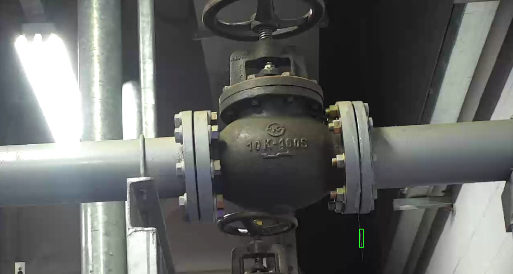

왼쪽 카드는 관제 상황판 문법: 순회마다 잰 값의 추이 + 주의 · 위험 기준선 + 단계 색(현장 DCS · 예지보전 상황판과 같은 문법). 오른쪽은 상세 화면에 둘 현장 전문 그림. 값은 현장 형식에 맞춘 시연용 값이고 장비 · 단위는 실제로 쓰는 것으로 골랐음.
로봇 카메라 영상 판별(의심도 %) — 현장에서는 고정식 가스 감지기 %LEL 추이, OGI · 음향 카메라 영상, 누액 감지선 위치를 씀. 냉각수(액체)라 근거 사진이 주인공
카드 A · 같은 지점 시간 추이
카드 B · 이번 순회 지점별
WP-03 냉각수 배관 밸브 · 11/02 10:11 · 오른쪽 플랜지 아래 물방울 · 바닥 젖음

순회마다 같은 자리 · 젖은 면적(cm², 영상 추정)과 의심도(%)
냉각 펌프 P-2 · 1,780 rpm(회전 29.7 Hz), 날개 6장(날개 통과 178 Hz) — 현장 예지보전: 상황판은 이상 점수 · 전체 세기 추이 + 경보선, 진단은 FFT 스펙트럼(대역 경보) · 스펙트로그램
카드 A · 같은 지점 시간 추이
카드 B · 이번 순회 지점별
지금 측정 · 정상 기준(지난 7일 평균) · 대역 경보선 — 로그 축 20 Hz ~ 20 kHz, dB
지난 10분 · 가로 시간, 세로 주파수(로그), 색 = 세기 — 2~6 kHz 베어링 대역이 간간이 밝아짐
수배전반 MCC-1 · 6.6 kV — 현장: 상시 감시 상황판은 방전 크기(pC) · 횟수 추이 + 경보선, 진단은 PRPD(위상 분해 부분방전) 산포도. 휴대 측정은 TEV dBmV
카드 A · 같은 지점 시간 추이
카드 B · 이번 순회 지점별
지난 60초 · 3,000주기 · 가로 위상 0~360°, 세로 방전 크기 pC, 색 = 같은 칸의 방전 수 · 회색 선 = 전원 사인파. 1·3사분면 대칭 덩어리 = 내부(공극) 방전 형태
지난 30일 · 하루 최대 크기(pC)와 초당 펄스 수 · 경보선 300 pC(주의) · 600 pC(위험)
지점마다 설비가 달라 기준도 다름(배관 · 펌프 40 / 70 ℃, 수배전반 45 / 60 ℃) — 지점별 막대는 막대마다 자기 기준 눈금을 그림
카드 A · 같은 지점 시간 추이
카드 B · 이번 순회 지점별